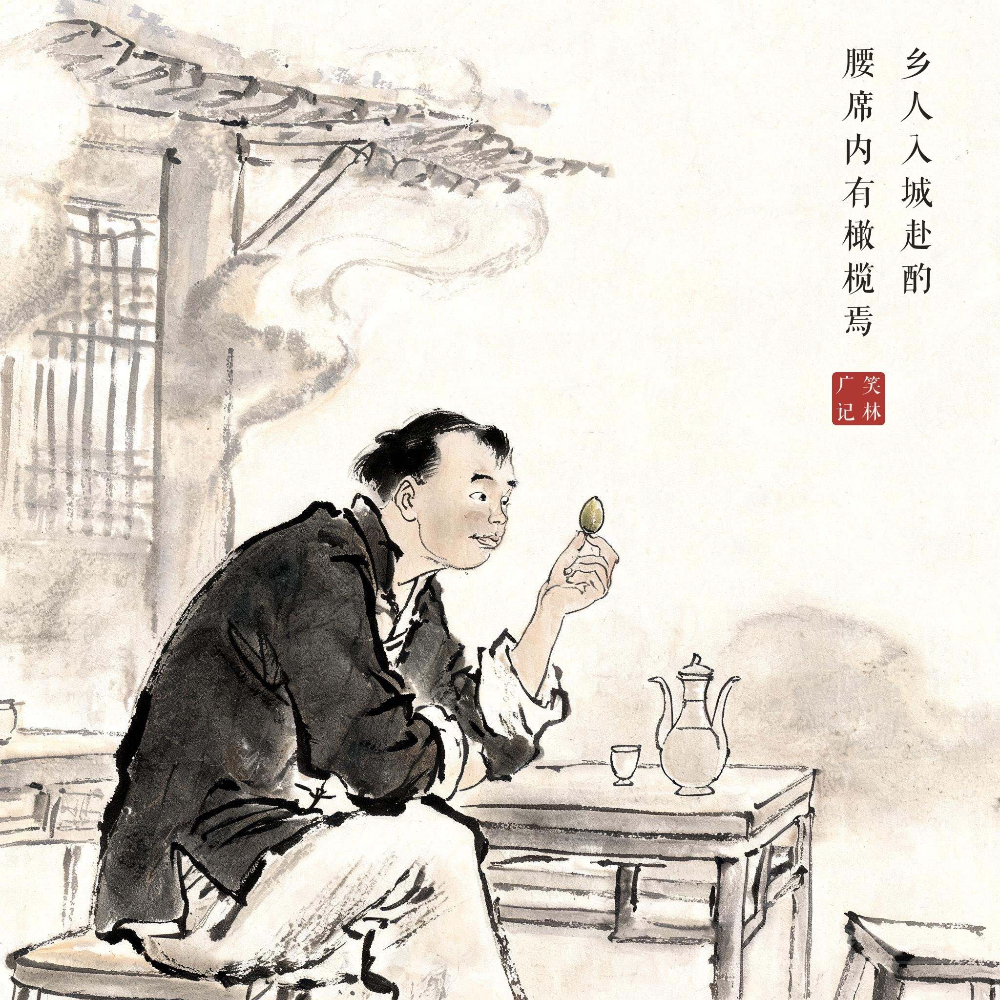
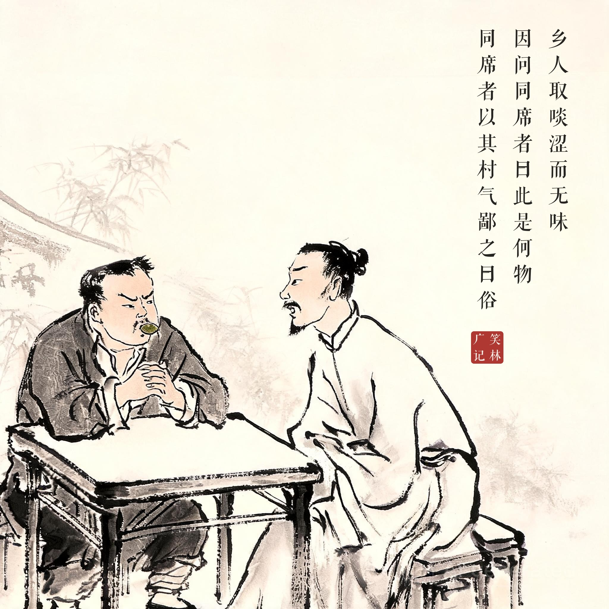
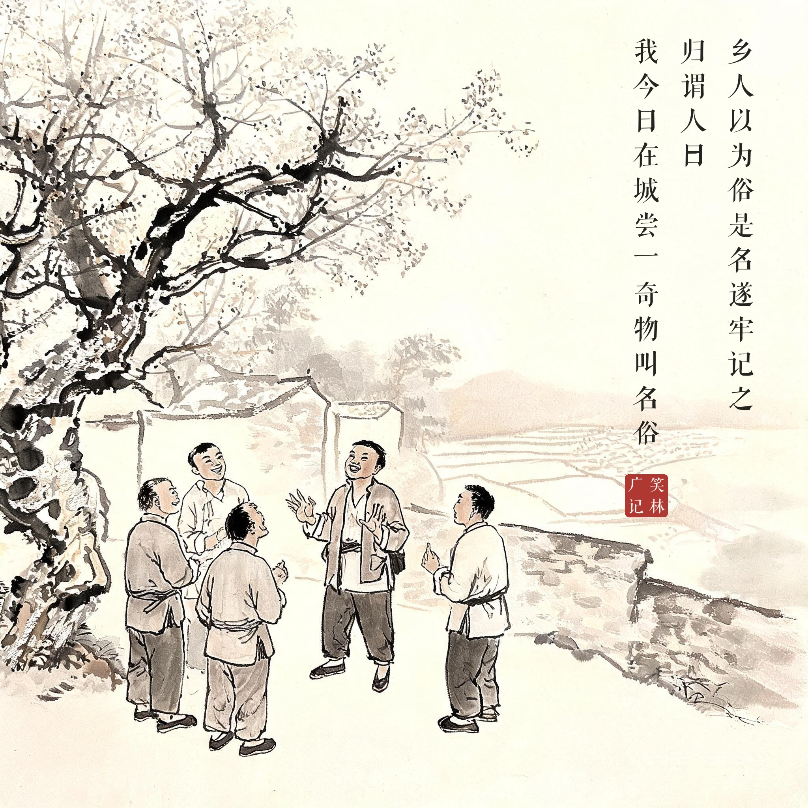
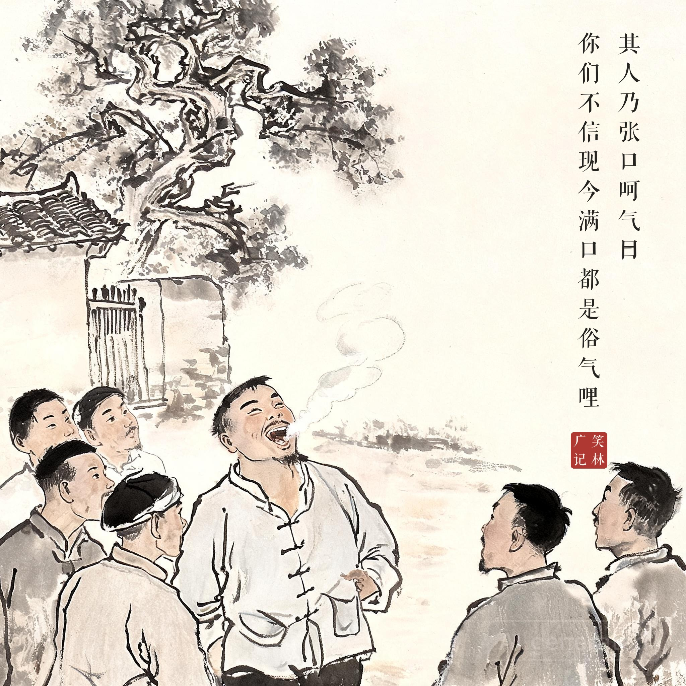

《笑林广记 · 讥刺部》（[清]游戏主人纂集）
乡人入城赴酌，腰席内有橄榄焉。乡人取啖，涩而无味，因问同席者曰："此是何物？"同席者以其村气，鄙之曰："俗。"乡人以为"俗"是名，遂牢记之。归谓人曰："我今日在城尝一奇物，叫名'俗'。"众未信，其人乃张口呵气曰："你们不信，现今满口都是俗气哩。"
乡下人进城赴宴，席上有橄榄。他拈起来一咬，又涩又没味，问同席的："这是什么？"城里人嫌他土，答了一个字："俗。"乡下人把"俗"当成了名字，牢牢记在心里。回乡后对人说："我今天在城里尝了个稀罕物，叫'俗'。"众人不信，他张口呵气："你们不信，我现在满口都是俗气呢！"
一个嘲讽一个当真，完成了对话最圆满的闭环——城里人骂的俗气，乡下人当场用嘴证明了它的存在。